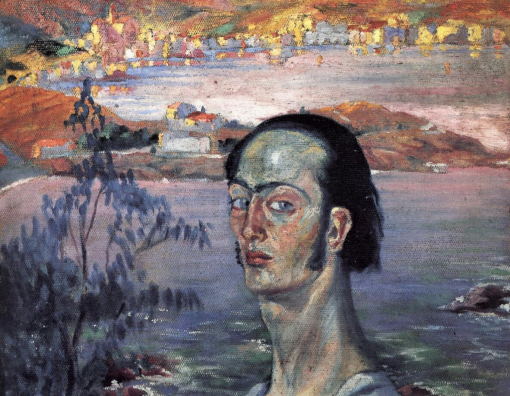
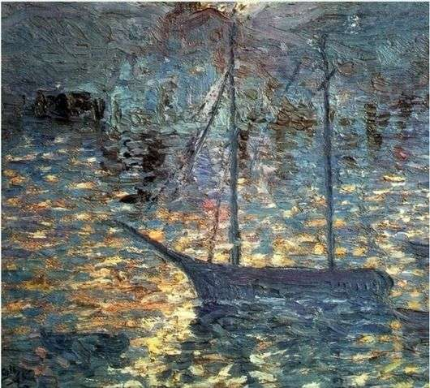

Этот напряжённый, как бы бросающий вызов автопортрет имеет претензию на несокрушимую мужественность, которая, вероятно, призвана скрыть чрезвычайную застенчивость Дали; этой же цели служил и более известный облик усталого проказника и денди.
Картина "Шея"
Картина была написана, когда юному Дали было всего семнадцать лет, хотя он и постарался сделать себя старше и придать своему облику нехарактерную для него твердость.Этот напряжённый, как бы бросающий вызов автопортрет имеет претензию на несокрушимую мужественность, которая, вероятно, призвана скрыть чрезвычайную застенчивость Дали; этой же цели служил и более известный облик усталого проказника и денди.


